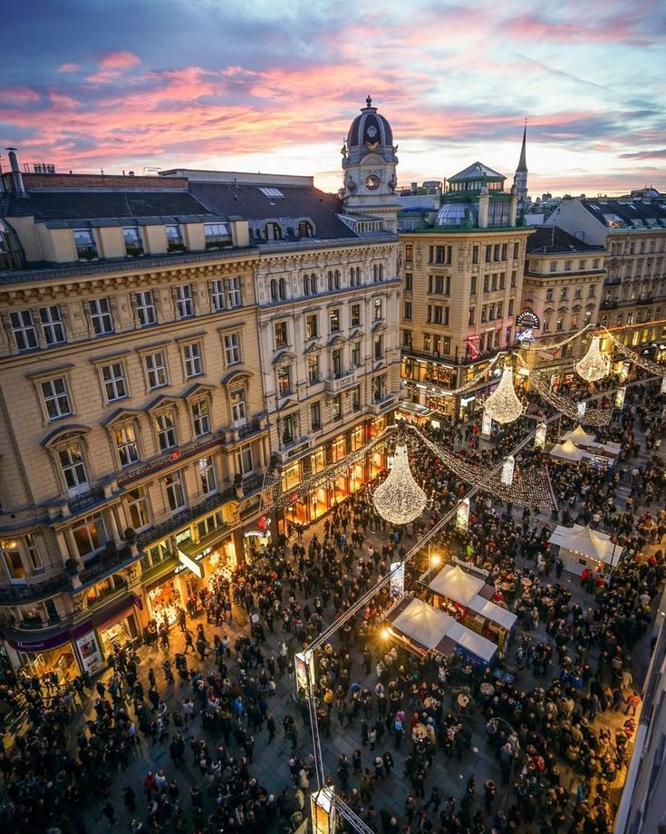
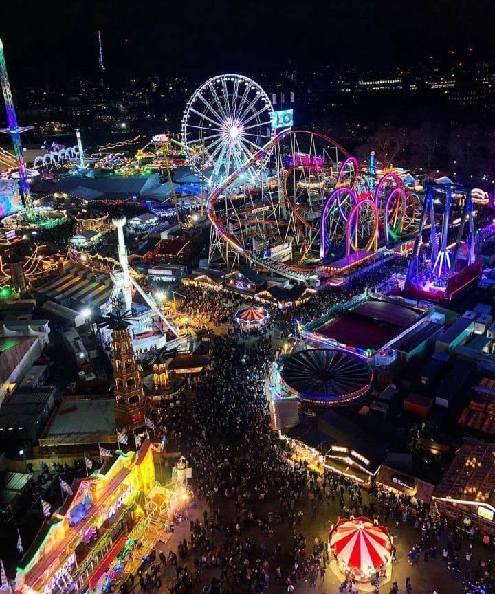
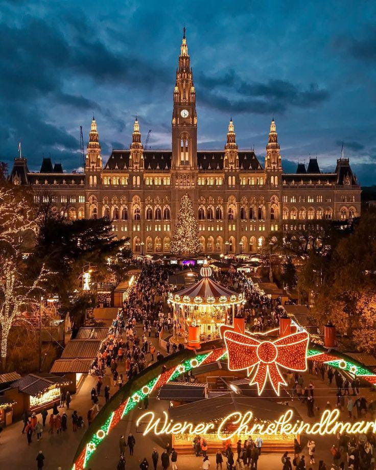
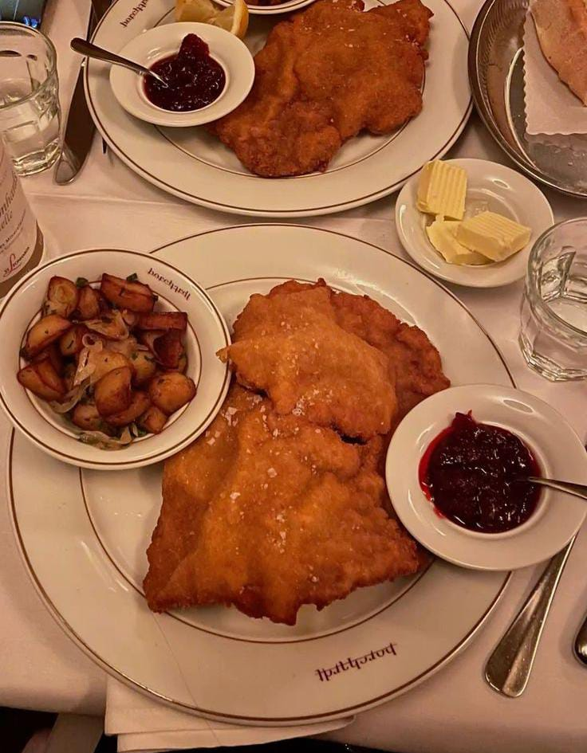
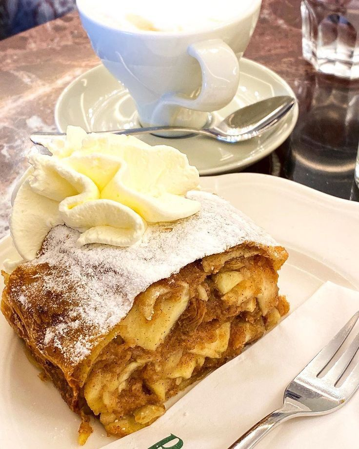
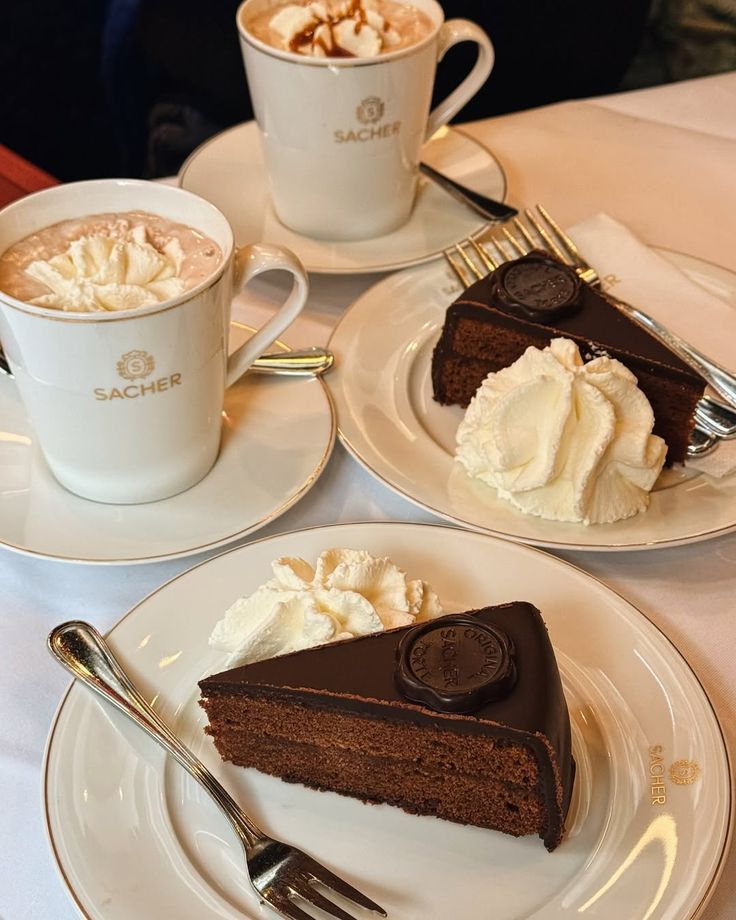

Vienna è una delle capitali più antiche e affascinanti d’Europa. È stata per secoli il centro dell’Impero Asburgico e ancora oggi conserva un grande patrimonio artistico e culturale.

Il centro storico di Vienna è il cuore pulsante della capitale austriaca e dal 2001 è Patrimonio UNESCO.

Il Wiener Prater è un grande parco pubblico, famoso per le sue attrazioni, fra le quali la più nota è la ruota panoramica più alta d'Europa.

Vienna è famosa per caffè storici, balli imperiali e mercatini di Natale.

Il piatto simbolo di Vienna: carne impanata e fritta, servita con patate o insalata.

Dolce tradizionale viennese, con pasta sottile ripiena di mele, uvetta e cannella.

La famosa torta al cioccolato di Vienna, ricoperta di glassa e servita con panna montata.
Per informazioni scrivimi a:
emanuela.centrone@marconibari.edu.it